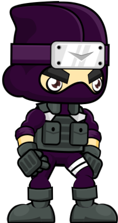
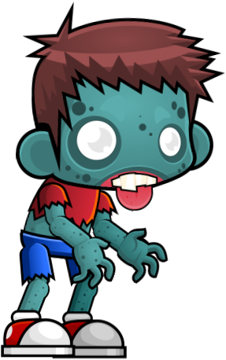
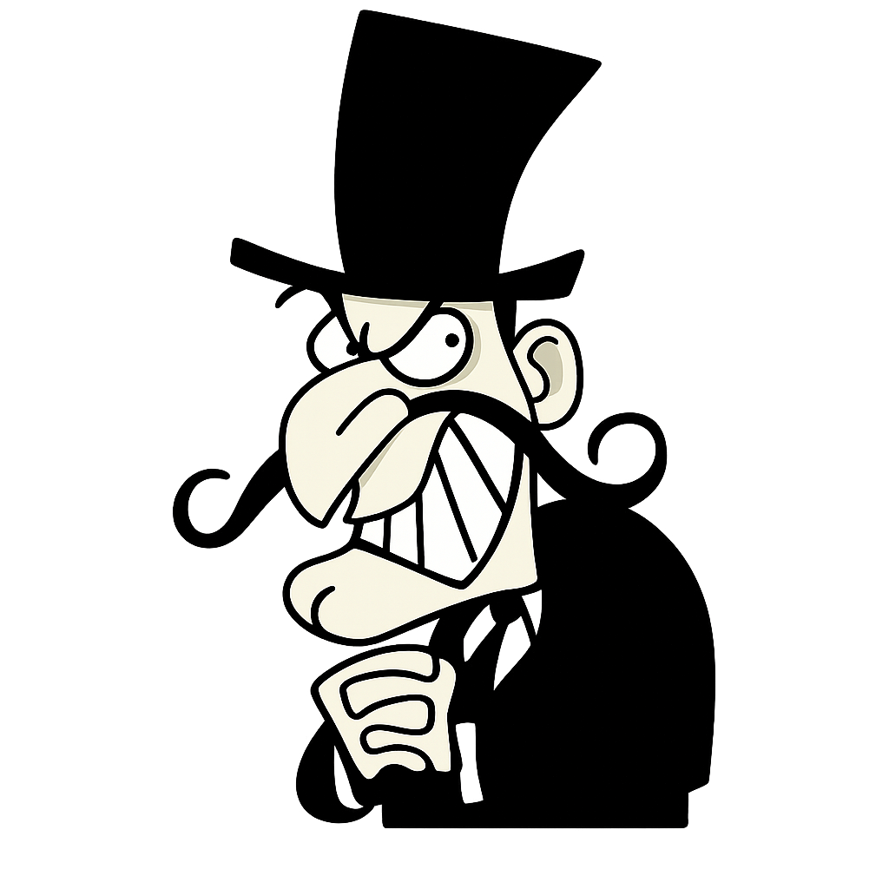

Ninja Go é um jogo de plataforma simples e divertido,
nele você controla Kaito, um ninja solitário em busca de vingança
depois que o coração sagrado de sua familia foi roubado,
este game foi feito para quem não tem medo de desafios e aventuras.
História
Uma entidade conhecida como O Arquiteto Pálido invadiu o templo
e roubou o Coração. O resultado? O mundo começou a desmoronar
e a se despedaçar. Pior ainda: o Arquiteto roubou a sombra de
Kaito, deixando-o em um estado de "meia-existência".
Sem sua sombra, Kaito está desaparecendo lentamente da realidade.
O mundo não é mais feito de carne e osso, mas de mecanismos e
cristais. Você controla Kaito, o último guardião de um clã
que protegia o "Coração da Forja" — uma fonte de energia ancestral
que mantinha o equilíbrio entre a gravidade e o caos.
Personagens

Esse é kaito, junto com ele voce irá aproveitar essa aventura insana.

Este é o capanga do Arquitéto pálido.

Este é o vilão principal, o Arquitéto pálido, o objetivo é recuperar o coração
das mãos dele.